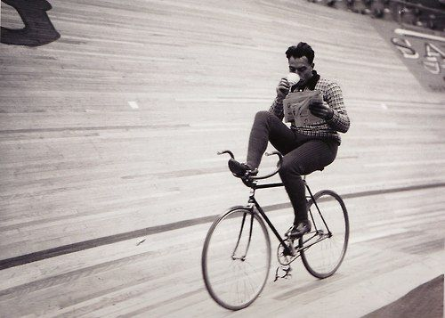
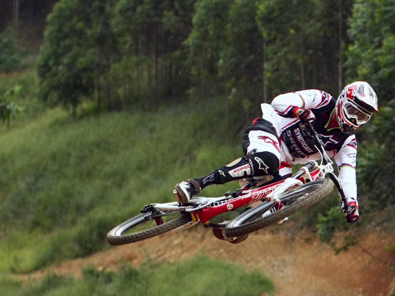
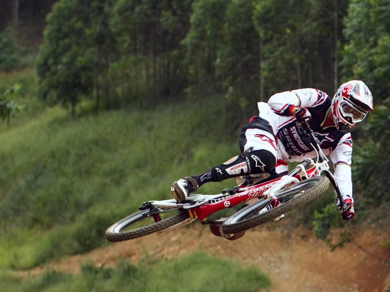

Bicycle!
What is bicycle?

Bicycle, also called a cycle or bike,is a human-powered,pedal-driven,single-track vehicle, having two wheels attached to the frame,one behind the other
A bicycle rider is colled cyclist or bicyclist.
What is bicycle?
Bicycle, also called a cycle or bike,is a human-powered,pedal-driven,single-track vehicle, having two wheels attached to the frame,one behind the other
A bicycle rider is colled cyclist or bicyclist.
If you want to ride a bike,first of all you must choose a bike!So, look bellow on different types of bikes!
You can choose your own type of a bike just by a click!